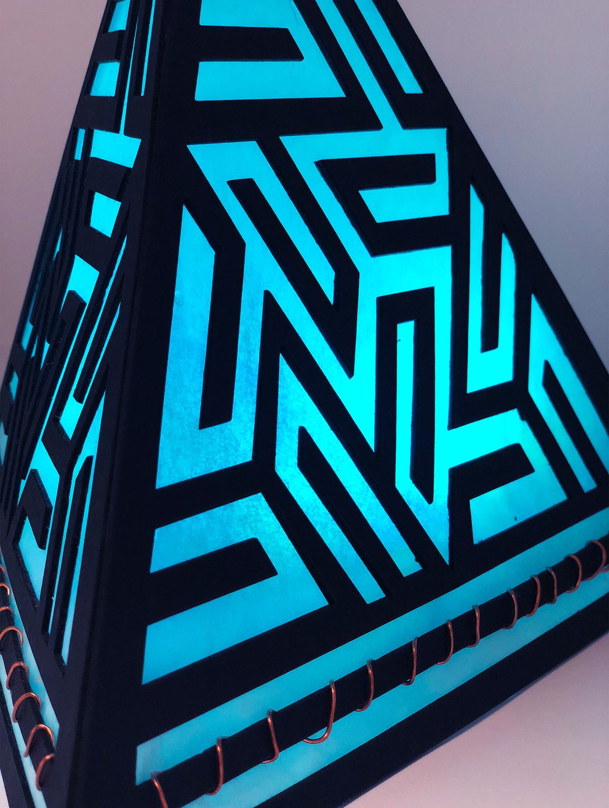

Touch Lamp Product Design
The design for this Light Pyramid was inspired by geometric tessellations, which are repeated patterns in a geometric form.
Created with laser cut Black illustration board, Tracing paper, Copper wire, Arduino, a battery, a neopixel ring, and Code in Processing.

I wanted to create a futuristic lamp that incorporated touch sensors to signal a change in the colors of the light.
The code uses the AnalogTouch library to sense touch through the copper wire and the FastLED library to change colors on the Neo-pixel ring each time through Demo reel 100.
THE PROCESS
The original iteration of the lamp was this simplified cube shape below, made of folded textured paper.
I tested the code and touch sensors and then focused on the design of the lamp.
I tested the design with trial and error, I then experimented with the shape using four sides, then switching to three for an elongated shape.
Back